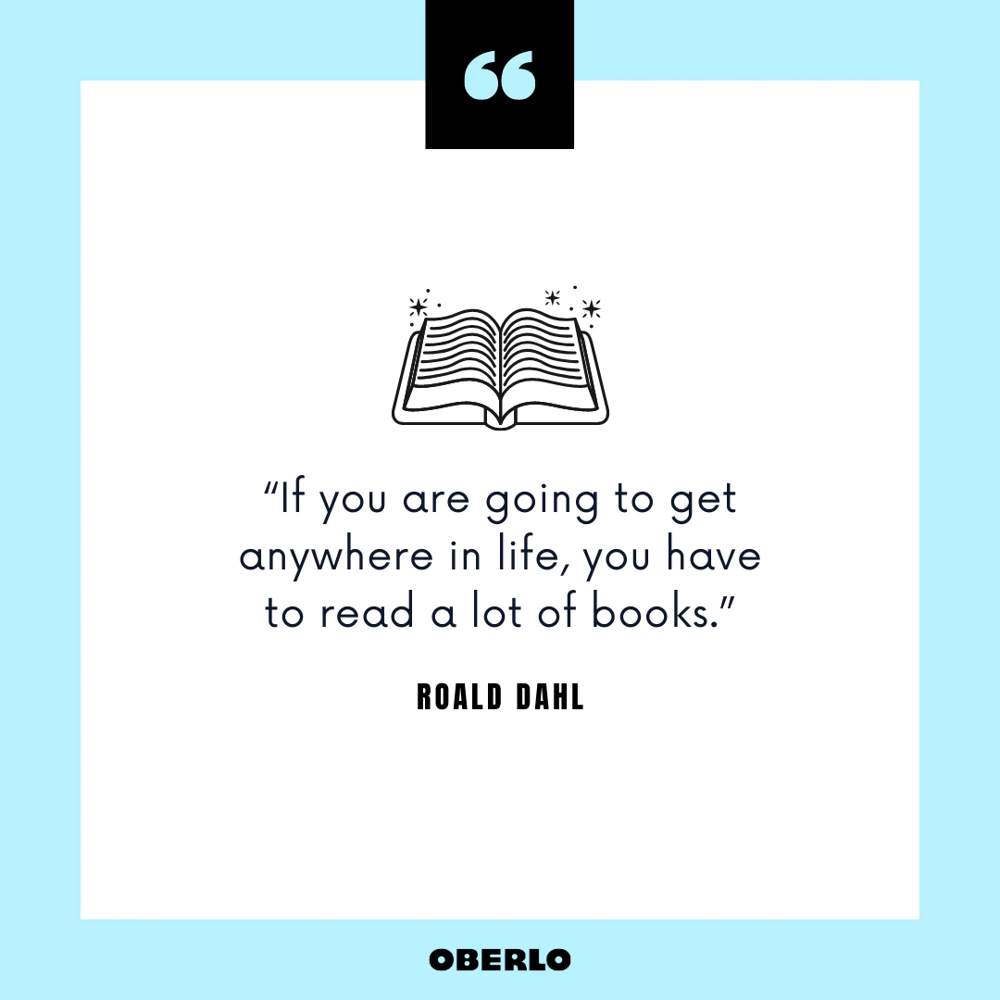

Reading is defined as a cognitive process
that involves decoding symbols to arrive at
meaning (Sandhu,2020). Reading is an active process
of forming meanings. Reading helps the reader to
direct information towards one's goal. Though the
reasons for reading may vary but the main purpose of
reading is to understand the text and explore beyond
one's knowledge.
Benifits of Reading
When was the last time you read a book or
any magazine artcle? If you hardly remember reading
a book, make reading your daily habit because reading
has a signinficant number of benifits. So, what are
you waiting for?! Here are some benifits of reading
to get you start reading.
Mental Stimulation
Studies on reading have shown staying mentally
stimulated can slow the possibilty of having
Alzhemer's and dementia. It is due to the fact that
when the brain is kept active and engaged, it is
prevented from losing power.
The brain just like any other muscles in our body,
requires exercise to keep it strong and healthy.
The games such as playing chess have also been found
to contribute to cognitive stimulation.
Stress Reduction
The stress we have at our work, in our personal
issues or any other issues faced in our daily lives,
it all just slips away when you are submerged in a
great story. A book that is well written can take you
to the other realms.
Knowledge
When you read, it fills up your head with new bits of
information and you never know when it might come in
handy. If you are filled with every knowledge from a
book, then you are better equipped to tackle any
challenge in your daily life. Even if you lose every-
thing else, your job, your health, even your money, but
remeber knowledge can never be taken from you.

Vocabulary Expansion
If you are articulate and well-spoken then it is of
great help in any profession and you can also speak to
your higher-ups with confidence. In one way or either,
reading helps to build your self-esteem. Reading book is
also vital for learning new languages. The more you read,
the more words you gain exposure to and thus making
their way into your everyday vocabulary.
Memory Improvement
When you read a book, you have to remember history,
backgrounds, characters and all those sub-plots. Every new
memory you create forges new brain pathways and strengthens
existing ones.
Thinking Skills
The ability to analyze details also comes in handy when it
comes to critiquing the plot like determining whether it
was a well-written piece, if the characters were properly
developed and all. You will be able to discuss the book
with others and you'll be able to state your opinions
clearly.
Improved Focus and Concentration
Attention of the people is drawn to different directions
such as people checking their emails, chatting with one
another, working on task, monitoring their smartphones and
interacting with their workers. Such kind of activities
leads their stress level to rise. So, when you read a book,
your attention is drawn to a story and you just forget about
the rest of the world. You can try from where you are right
now. Go grab a book or you can get it from online and try
reading for 15-20 minutes. You'll be surprised at how much
you are focused once you start doing your work.
Better Writing Skills
The writers usually enhance their skills on writing by
reading the works of others. The act of reading can help
you to incorporate new writing styles into your work and
give fresh perspectives that can be used in your writing.
Read actively in order to discover creative writing
strategies, word choices and syntax control to incorporate
into your writing skills.
Tranquility
The subject that you read about can bring about immmense
inner peace and tranquility. For example, reading a
spiritual text can lower blood pressure and can bring
sense of calm. Reading self-help books help people
suffering from certain mood disorders, mental illnesses
and keeps them motivated.
Free Entertainment
Many of us want to buy books since we can use it for
our future references and it is also good for our eyes to
read from the pages besides reading from the screen. We can
visit our local libraries and get some drive in it for
free. If you happen to live in an area where you don't have
an access to the libraries, most libraries have thier books
available in PDF or in ePub format so that you can read them
on your e-reader, iPad or on your computer screen. Actually
it is not recommended to read from the screens due to the
production of short-wavelength blue light causing harm
to our eyes. But modern problems do have modern solutions.
To prvent our eyes from the harmfuls light, we can use some
applications such as ReadEra, also the mobile these days
have eye comfort sheild and all, in which these functions
take control over the harmful light.
There is a reading genre for every literate person on the
planet. Whether your taste lie in classical literature,
poetry, fashion magazines, biographies, religious texts,
self-help guides or romance novels, there's something out
there to capture your curiosity and imagination.
There are many more other benifits of reading and you
can go through by clicking on the link given below.